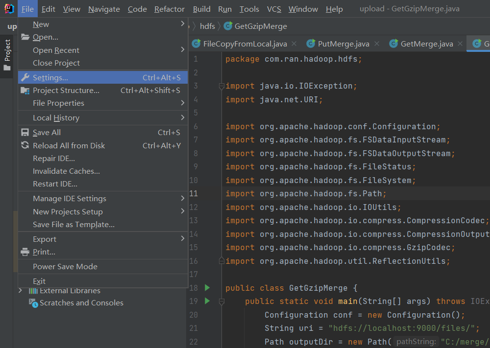
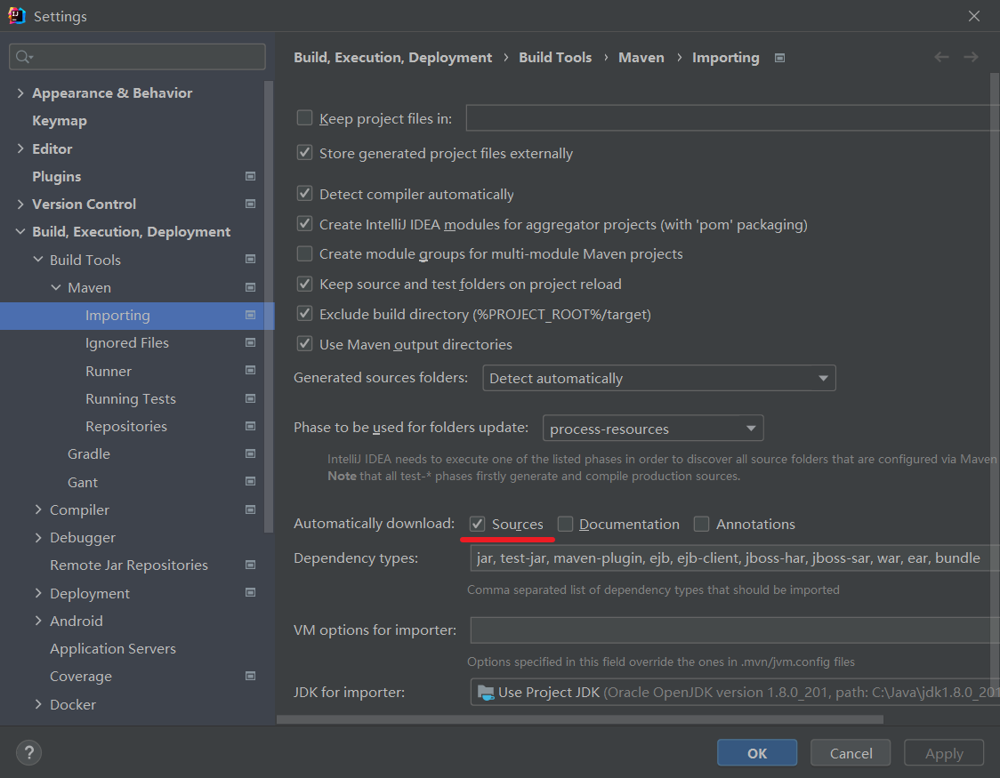
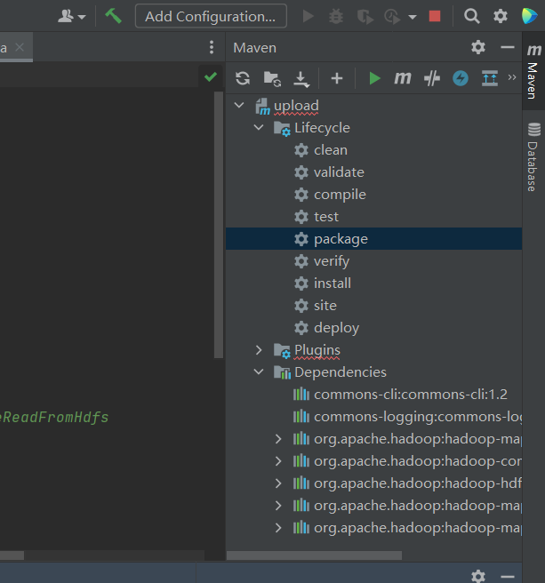
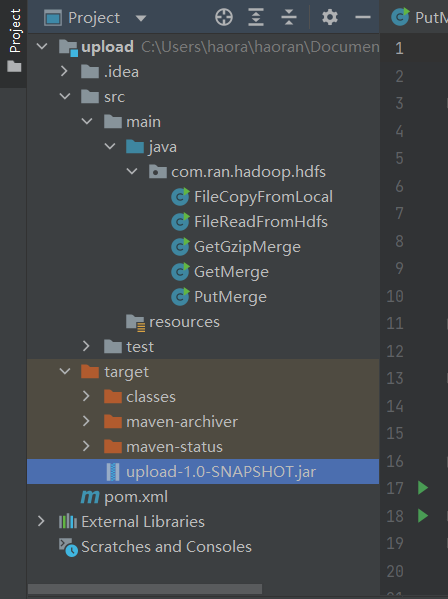

Intelij+Maven搭建Hadoop项目流程
Table of Contents
1. 创建工程
点击 project – Maven – next
2. 通过 maven 导入项目依赖 jar 包
设置 maven 自动导入依赖 jar 包
 
配置 pom.xml 文件
<?xml version="1.0" encoding="UTF-8"?> <project xmlns="http://maven.apache.org/POM/4.0.0" xmlns:xsi="http://www.w3.org/2001/XMLSchema-instance" xsi:schemaLocation="http://maven.apache.org/POM/4.0.0 http://maven.apache.org/xsd/maven-4.0.0.xsd"> <modelVersion>4.0.0</modelVersion> <groupId>com.ran.hadoop</groupId> <artifactId>upload</artifactId> <version>1.0-SNAPSHOT</version> <packaging>jar</packaging> <properties> <!-- 这里是你的 hadoop 版本 --> <hadoop.version>2.7.3</hadoop.version> </properties> <dependencies> <dependency> <groupId>commons-cli</groupId> <artifactId>commons-cli</artifactId> <version>1.2</version> </dependency> <dependency> <groupId>commons-logging</groupId> <artifactId>commons-logging</artifactId> <version>1.1.3</version> </dependency> <dependency> <groupId>org.apache.hadoop</groupId> <artifactId>hadoop-mapreduce-client-jobclient</artifactId> <version>${hadoop.version}</version> </dependency> <dependency> <groupId>org.apache.hadoop</groupId> <artifactId>hadoop-common</artifactId> <version>${hadoop.version}</version> </dependency> <dependency> <groupId>org.apache.hadoop</groupId> <artifactId>hadoop-hdfs</artifactId> <version>${hadoop.version}</version> </dependency> <dependency> <groupId>org.apache.hadoop</groupId> <artifactId>hadoop-mapreduce-client-app</artifactId> <version>${hadoop.version}</version> </dependency> <dependency> <groupId>org.apache.hadoop</groupId> <artifactId>hadoop-mapreduce-client-hs</artifactId> <version>${hadoop.version}</version> </dependency> </dependencies> </project>
3. 编写 hdfs 读写程序
package com.ran.hadoop.hdfs; import org.apache.hadoop.conf.Configuration; import org.apache.hadoop.fs.FileSystem; import org.apache.hadoop.fs.Path; import org.apache.hadoop.io.IOUtils; import java.io.*; import java.net.URI; /** * 将本地文件系统的文件通过java-API写入到HDFS文件 */ public class FileCopyFromLocal { public static void main(String[] args) { Configuration configuration = new Configuration(); configuration.set("fs.hdfs.impl", "org.apache.hadoop.hdfs.DistributedFileSystem"); String source = "C:\\files\\file03.txt"; String destination = "hdfs://localhost:9000/files/file03.txt"; try { InputStream in = new BufferedInputStream(new FileInputStream(source)); //HDFS读写的配置文件 Configuration conf = new Configuration(); //生成一个文件系统对象 FileSystem fs = FileSystem.get(URI.create(destination), conf); //生成一个输出流 OutputStream out = fs.create(new Path(destination)); IOUtils.copyBytes(in, out, 4096, true); } catch (FileNotFoundException e) { e.printStackTrace(); } catch (IOException e) { e.printStackTrace(); } } }
// 把 hdfs 中的文件传输到本地 package com.ran.hadoop.hdfs; import org.apache.hadoop.conf.Configuration; import org.apache.hadoop.fs.FSDataInputStream; import org.apache.hadoop.fs.FileSystem; import org.apache.hadoop.fs.Path; import org.apache.hadoop.io.IOUtils; import java.io.BufferedOutputStream; import java.io.FileOutputStream; import java.io.IOException; import java.net.URI; /** * 从HDFS读取文件 * 打包运行jar包 $ hadoop jar com.ran.hadoop-1.0-SNAPSHOT.jar com.ran.hadoop.hdfs.FileReadFromHdfs */ public class FileReadFromHdfs { public static void main(String[] args) { try { String srcFile = "http://127.0.0.1:8088/cluster/files/file01.txt"; Configuration conf = new Configuration(); FileSystem fs = FileSystem.get(URI.create(srcFile), conf); FSDataInputStream hdfsInStream = fs.open(new Path(srcFile)); BufferedOutputStream outputStream = new BufferedOutputStream(new FileOutputStream("C:\\files\\file01_bak.txt")); IOUtils.copyBytes(hdfsInStream, outputStream, 4096, true); } catch (IOException e) { e.printStackTrace(); } } }
4. 通过运行 jar 包的方式验证


生成 upload-1.0-SNAPSHOT.jar，这里的 upload 与 1.0-SNAPSHOT 都是 pom.xml 文件中配置的，可以修改。
得到 jar 包后通过 hadoop jar 命令让 hadoop 运行 jar 包：
hadoop jar upload-1.0-SNAPSHOT.jar com.ran.hadoop.hdfs.FileCopyFromLocal
这里的 com.ran.hadoop.hdfs.FileCopyFromLocal 是全类名（包+类名），根据自己的项目更改。